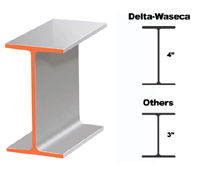

| KOU |
as in : "The crafty drug mule smuggled COCAINE on the plane in his COLON. " |
|
It looks like a cross-section of an iron girder. Since this is the kanji for factory (工場), you can think of it like, a girder made at the iron factory.  |
| 工事 |
construction
★★★★★
construction work - buildings or roads, i.e. what guys do outside your window. |
| 工場 |
factory
★★★☆☆
|
| 人工的 な |
man-made
★★★☆☆
NEO
|
| 大工 |
carpenter
☆☆☆☆☆
FP
carpenter. How awesome is that!???! Seriously, I wouldn't even believe my friend when he told me,I was like, 'Cmon, grow up.' He was like, "What is so funny about a daiku carpenter?" I made him look it up in the dictionary and prove it. |
|
man-made
人工 人造 |
 KANJIDAMAGE
KANJIDAMAGE
 Number
647
Number
647